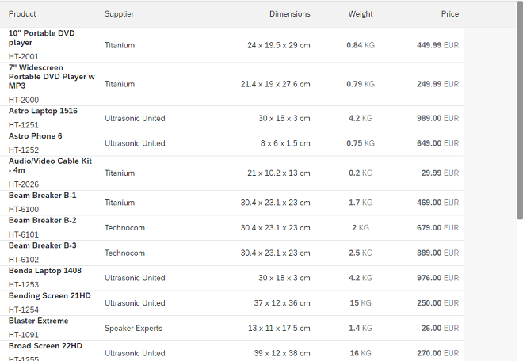

width property of sap.m.Column can have any valid
CSS size, for example, 100px, 6em, or 25%. The default value of the width is
empty, which makes the column flexible
by
covering the available space.There are a few things to keep in mind when defining the width of the column:
You can use percentage values but you should be careful doing that: A value might be suitable for a desktop screen, but not for a mobile device. In this case, using an absolute width (for example, 200px or 4rem) can be a better option.
Leave the most important column's width empty or set it to auto if your
table contains columns that have the
demandPopin
property
enabled.
Let's say you have a 100%-width table with four columns,
each of which has a width of 200px and a viewport that is 800px wide. If you
resize the viewport to 500px, you can still show two columns while the
remaining two columns are
rendered
as pop-ins.
The
total width of the two main columns is 400px. However, the viewport is then
500px, and the table is 100%. In that case the browser
takes over handling this. If you configure
Selection
or
Navigation,
these are also rendered as columns. The width of these columns is then also
changed by the browser, which can lead to unexpected results. So the best
solution is leaving the most important column's width empty (or set to
auto)
so
it can take up as much space as it needs. In our example,
this will be 300px.
Do not use percentage values for the width of all columns even if this adds up to 100% of the total column width.
What if there is a Selection (3rem width), Navigation
(3rem width), or Deletion (3rem width)? In this case, the
total width would be 100% plus 6rem. If the total width is less than 100%,
for example, one column with 20% and the other column with 40%, the total
width would be 60% plus 6rem. By default, Table itself is
in fixed layout mode and has a width of 100%. The browser needs to
split
up the width as it does not fit a 100% width. In some
cases, browsers might handle this correctly, but you should avoid it. As
mentioned, leaving the most important column
width
empty or set to auto fixes this problem because then the
column will be flexible and cover the available
space.
For more information, see the Sample.
There might be cases where you
need to define a static width (px, em, or %) for all columns in the table. For these
cases sap.m.Table offers a strict layout feature. To enable this
feature, set fixedLayout="Strict" in the table. The
Strict layout
takes
the defined column width for the columns into account and renders
a placeholder column which occupies the remaining width of the table to ensure the
column width is strictly applied.

For more information, see the Sample.